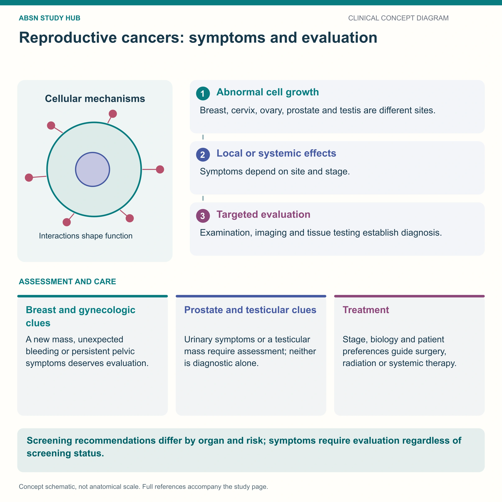

The lump that matters, what the receptors decide, and the arm rules after node surgery.

Painless is the trap. People assume cancer hurts, so the painless lump is the one that gets ignored.
The classic malignant lump. Hard, irregular, fixed to surrounding tissue, painless, and most often in the upper outer quadrant — because that is where most breast tissue is, and it extends into the armpit.
Painless is the trap. Patients assume cancer hurts, so a painless lump gets ignored.
| More worrying | More often benign | |
|---|---|---|
| Feel | Hard, irregular, fixed | Soft or rubbery, smooth, mobile |
| Pain | Usually painless | Often tender, and varies with the cycle |
| Number | Usually one | Frequently several, often both breasts |
| Skin | Dimpling, peau d’orange, redness, thickening | Normal |
| Nipple | Newly inverted; bloody or one-sided discharge | Unchanged |
Other findings to report
The two biggest risk factors cannot be changed: being female, and getting older. That is worth saying out loud, because patients often blame themselves.
Cannot change
Can change
Before a mammogram: no deodorant, powder or lotion on the day — they show as specks that mimic microcalcifications. Schedule it a week after a period, when breasts are least tender.
The biopsy does more than confirm cancer. It reports receptors, and the receptors choose the treatment.
| Receptor status | Meaning | Treatment it points to |
|---|---|---|
| ER / PR positive | Fed by estrogen or progesterone | Hormone therapy — tamoxifen, or an aromatase inhibitor after menopause |
| HER2 positive | Over-expresses a growth protein; grows faster | Targeted antibody — trastuzumab |
| Triple negative | ER, PR and HER2 all negative — no target | Chemotherapy; more aggressive, poorer prognosis |
Two drug points that get asked
Removing lymph nodes removes drainage. Fluid can no longer leave that arm easily, so it swells — lymphedema — and once established it is permanent and hard to treat. Every rule below exists to prevent it, and it is lifelong on that side.
On the affected arm, never:
Put a sign above the bed and a band on the other wrist. Everyone who enters the room needs to know.
What to do instead
Watch the drain, and watch the dressing. Record drainage volume and color; it should lighten and lessen. Assess behind and underneath the patient for pooled blood — it tracks to the back when they are lying down and a dry front dressing can be reassuring for the wrong reason.
The part that is not physical. Body image, sexuality, fear of recurrence and identity are all in play, and they are not solved by cheerfulness. Ask directly, allow the answer to be bleak, and offer reconstruction information, prosthesis fitting and peer support without waiting to be asked.
These newly drawn concept diagrams consolidate the retired illustration sets. The accompanying study notes and original handout links remain on this page.